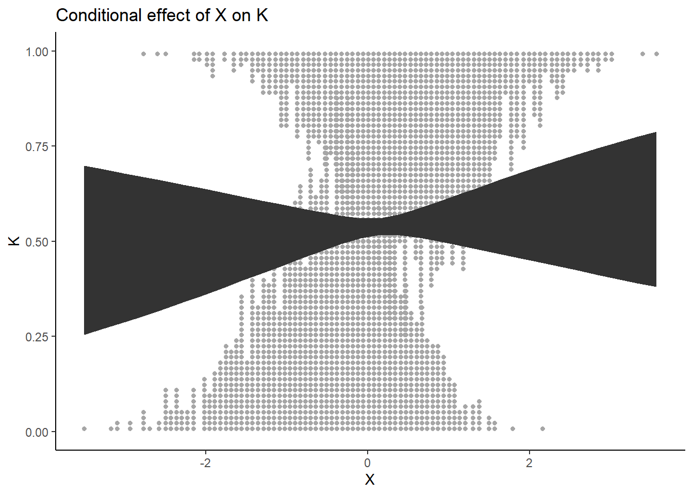
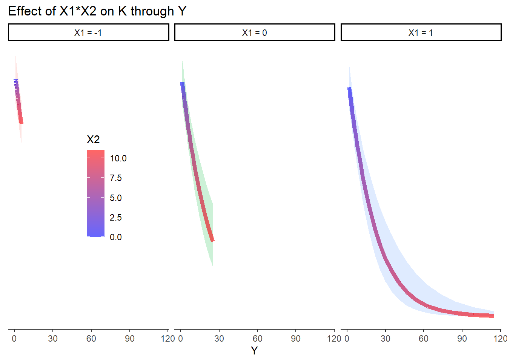

When fitting a model (ex. glm) in a causal inference context, we are either estimating the direct or total effect of a given variable. For example, in a DAG such as this one:
We can estimate the direct effect of X on K by fitting a model such as
lm(K ~ X + Y)
In this case, we estimate the direct effect of X on K as we are controlling for Y. Such is the nature of (generalized) linear models.
If we want to estimate the total effect of X on K, we simply fit the model
lm(K ~ X)
In this case, as we are ignoring Y, we estimate the direct effect of X + its indirect effect through Y (the total effect).
But what if we are interested in looking at the indirect effects?
As François Briau once told me, the study of Ecology is the study of direct and indirect effects. We just don’t really do it formally.
Luckily, Bill Shipley has spent quite a bit of brain power in quantifying direct, indirect and total effects which is what we call Path Analysis.
The great Bill Shipley
Very briefly, to calculate indirect effects in along a path (ex. TSF -> Sphagnum cover -> forest floor thickness), one must multiply the (standardized) coefficients along that path. In this case, 0.073 * 0.164 = 0.011972
N. Fenton et al. / Forest Ecology and Management 213 (2005) 151–159
But what does that number represent? When all relationships are linear, that value represents a slope. When the relationship(s) is/are not linear (ex. Poisson and logistic regressions), the value represents the slope on the link scale (log or logit or other). On the response scale, the slope is not constant through the entire relationship (we will see later). So how do we interpret such indirect effects if they are not on the scale of the variable we measured?
Start by loading the pertinent packages
Code
rm(list=ls()) # clear workspacelibrary(tidyverse) # data manipulation and plottinglibrary(glmmTMB) # frequentist glmmslibrary(patchwork) #multiple plotslibrary(ggdist) # nice dots in logistic regressionlibrary(tidylog) # log changes done during data wranglinglibrary(mgcv) # gammslibrary(gratia) # gam predictions
First, we will simulate data from this DAG:
But these are just letters - BORING
The DAG could also be
or
You don`t have to think too hard to see this type of relationship in your own work.
Code
set.seed(333) # set seed to reproduce the simulations exactlyn <-3000# sample sizeX <-rnorm(n, 0, 1) # define K as a Z-scoreY <-rpois(n, exp(4+0.5*X)) # Y is a poisson variable whose link is the log function so defining the coefficients using the inverse log (exponential)K <-rbinom(n, size =1, prob =plogis(-3+0.03*X +0.05*Y)) # K is a Bernoulli variable whose link is the logit so defining the coefficients using the inverse logit (plogis)data <-tibble(X = X,Y = Y,K = K,K_1 =1- K)head(data)
mY_X <-glmmTMB(Y ~ X, family = poisson, data = data)summary(mY_X)
Family: poisson ( log )
Formula: Y ~ X
Data: data
AIC BIC logLik -2*log(L) df.resid
20576.1 20588.1 -10286.1 20572.1 2998
Conditional model:
Estimate Std. Error z value Pr(>|z|)
(Intercept) 3.997055 0.002606 1534 <2e-16 ***
X 0.499396 0.002281 219 <2e-16 ***
---
Signif. codes: 0 '***' 0.001 '**' 0.01 '*' 0.05 '.' 0.1 ' ' 1
Model for K
Code
mK_XY <-glmmTMB(cbind(K, K_1) ~ X + Y, family = binomial, data = data)summary(mK_XY)
Family: binomial ( logit )
Formula: cbind(K, K_1) ~ X + Y
Data: data
AIC BIC logLik -2*log(L) df.resid
3243.0 3261.0 -1618.5 3237.0 2997
Conditional model:
Estimate Std. Error z value Pr(>|z|)
(Intercept) -2.682855 0.284409 -9.433 <2e-16 ***
X 0.075036 0.133618 0.562 0.574
Y 0.045318 0.004856 9.332 <2e-16 ***
---
Signif. codes: 0 '***' 0.001 '**' 0.01 '*' 0.05 '.' 0.1 ' ' 1
Notice the p-value for X
Extract predictions of Y ~ X
Here, I use a long-winded way to compute the predictions to show how it is done
Code
#create dataframe with values of X for which we want to predict Ynew_dat_Y_X <-tibble(X =seq(from =min(data$X), to =max(data$X), length.out =30)) #predict Y but on the link scale (log) to calculate confidence intervalspred_new_dat_Y_X <-predict(mY_X, newdata = new_dat_Y_X, type ="link", se.fit =TRUE)#extract the inverse link function for the model (exponential in this case) ilink<-family(mY_X)$linkinv# bind the dataframes with values of X and the predicted Y valuespredictions_Y_X <-cbind(new_dat_Y_X,data.frame(pred_new_dat_Y_X)) %>%#calculate the confidence intervals on the log scale and exponentiatemutate(CI.up =ilink(fit + (1.96*se.fit)),CI.low =ilink(fit - (1.96*se.fit)),Pred=ilink(fit))
Plot
Code
pY_X <-ggplot() +geom_line(data = predictions_Y_X, aes(y = Pred, x = X)) +geom_ribbon(data = predictions_Y_X, aes(ymin = CI.low, ymax = CI.up, x = X)) +geom_point(data = data, aes(x = X, y = Y), alpha =0.2) +theme_classic() +labs(title ="Effect of X on Y")pY_X
Now, the conditional (direct) effect of X on K
Code
new_dat_K_X <-tibble(X =seq(from =min(data$X), to =max(data$X), length.out =30),Y =mean(data$Y)) # set y to its mean to pred_new_dat_K_X <-predict(mK_XY, newdata = new_dat_K_X, type ="link", se.fit =TRUE)ilink<-family(mK_XY)$linkinvpredictions_K_X <-cbind(new_dat_K_X,data.frame(pred_new_dat_K_X)) %>%mutate(CI.up =ilink(fit + (1.96*se.fit)),CI.low =ilink(fit - (1.96*se.fit)),Pred=ilink(fit))pK_X <-ggplot() +stat_dots(data = data,aes(y = K,x = X,side =ifelse(K_1 ==0, "bottom", "top")),size =2)+geom_line(data = predictions_K_X, aes(y = Pred, x = X)) +geom_ribbon(data = predictions_K_X, aes(ymin = CI.low, ymax = CI.up, x = X)) +theme_classic() +labs(title ="Conditional effect of X on K")pK_X

What about the conditional (direct) effect of Y on K ?
Code
new_dat_K_Y <-tibble(Y =seq(from =min(data$Y), to =max(data$Y), length.out =30),X =mean(data$X)) # set X to its meanpred_new_dat_K_Y <-predict(mK_XY, newdata = new_dat_K_Y, type ="link", se.fit =TRUE)ilink<-family(mK_XY)$linkinvpredictions_K_Y <-cbind(new_dat_K_Y,data.frame(pred_new_dat_K_Y)) %>%mutate(CI.up =ilink(fit + (1.96*se.fit)),CI.low =ilink(fit - (1.96*se.fit)),Pred=ilink(fit))pK_Y <-ggplot() +stat_dots(data = data,aes(y = K,x = Y,side =ifelse(K_1 ==0, "bottom", "top")),size =2)+geom_line(data = predictions_K_Y, aes(y = Pred, x = Y)) +geom_ribbon(data = predictions_K_Y, aes(ymin = CI.low, ymax = CI.up, x = Y)) +theme_classic() +labs(title ="Conditional effect of Y on K")pK_Y
So this is the direct effect of Y on K. But, remember that Y is caused by X so it may be of interest to see how X affects K indirectly, through Y
Code
pY_X
The first step is to select values of Y that are predicted by X
Code
COLS <-alpha(colorRampPalette(c("blue","red"))(30),0.6)pY_X +geom_point(data = predictions_Y_X, aes(y = Pred, x = X, color = X), size =4) +scale_color_gradientn(colours = COLS)
The next step is actually quite simple. We generate predictions for K as a function of the predictions of Y ~ X
new_dat_K_YX <-tibble(Y = predictions_Y_X$Pred, # predicted mean Y from XX =mean(data$X)) # set X to its mean
pK_Y +geom_line(data = pred_K_YX, aes(x = Y, y = Pred, color = X), linewidth=2) +labs(title ="Indirect effect of X on K through Y") +scale_color_gradientn(colours = COLS)
We could push this even further and look at indirect effects through a non-monotonous relationship
And what about interactions?
Simulate data
Code
n <-3000#interacting variablesX1 <-rnorm(n = n, mean =0, sd =1)X2 <-rpois(n = n, lambda =3)#mediatorY <-rpois(n = n, lambda =exp(0+0.4*X1 +0.3*X2 +0.1*X1*X2))#outcomeK <-rbinom(n = n, size =1, prob =plogis(-2+0.1*X1 +0.2*X2 +0.5*X1*X2 -0.05*Y))data <-tibble(X1 = X1,X2 = X2,Y = Y,K = K,K_1 = K -1)head(data)
mY_X <-glmmTMB(Y ~ X1 + X2 + X1*X2, family = poisson, data = data)mK_XY <-glmmTMB(K ~ X1 + X2 + X1*X2 + Y, family = binomial, data = data)
Predictions
Y ~ X
Code
new_data_YX <-expand_grid(X1 =c(-1, 0, 1),X2 =seq(from =min(data$X2), to =max(data$X2), length.out =30))pred_new_dat_Y_X <-predict(mY_X, newdata = new_data_YX, type ="link", se.fit =TRUE) # predict on link scaleilink<-family(mY_X)$linkinv # extract inverse link (exponential in this case)#calculate confidence intervals on link scale and back transformpredictions_Y_X <-cbind(new_data_YX,data.frame(pred_new_dat_Y_X)) %>%mutate(CI.up =ilink(fit + (1.96*se.fit)),CI.low =ilink(fit - (1.96*se.fit)),Pred=ilink(fit))ggplot() +geom_ribbon(data = predictions_Y_X, aes(ymin = CI.low, ymax = CI.up, x = X2, fill =as.factor(X1)), alpha =0.2) +geom_line(data = predictions_Y_X, aes(y = Pred, x = X2, color =as.factor(X1))) +labs(y ="Y",title ="Interacting effect of X1 & X2 on Y") +theme_classic()
K ~ X | Y
Code
new_data_KX <-expand_grid(X1 =c(-1, 0, 1),X2 =seq(from =min(data$X2), to =max(data$X2), length.out =30),Y =mean(data$Y))pred_new_dat_K_X <-predict(mK_XY, newdata = new_data_KX, type ="link", se.fit =TRUE) # predict on link scaleilink<-family(mK_XY)$linkinv # extract inverse link (inverse logit in this case)#calculate confidence intervals on link scale and back transformpredictions_K_X <-cbind(new_data_KX,data.frame(pred_new_dat_K_X)) %>%mutate(CI.up =ilink(fit + (1.96*se.fit)),CI.low =ilink(fit - (1.96*se.fit)),Pred=ilink(fit))pK_X <-ggplot() +geom_ribbon(data = predictions_K_X, aes(ymin = CI.low, ymax = CI.up, x = X2, fill =as.factor(X1)), alpha =0.2) +geom_line(data = predictions_K_X, aes(y = Pred, x = X2, color =as.factor(X1)))+labs(y ="K",title ="Interacting effect of X1 & X2 on K",fill ="X1",color ="X1") +theme_classic()+theme(legend.position =c(0.1, 0.5))pK_X
K ~ Y | X
Code
new_data_KY <-expand_grid(X1 =mean(data$X1),X2 =mean(data$X2),Y =seq(from =min(data$Y), to =max(data$Y), length.out =30))pred_new_dat_K_Y <-predict(mK_XY, newdata = new_data_KY, type ="link", se.fit =TRUE) # predict on link scaleilink<-family(mK_XY)$linkinv # extract inverse link (inverse logit in this case)#calculate confidence intervals on link scale and back transformpredictions_K_Y <-cbind(new_data_KY,data.frame(pred_new_dat_K_Y)) %>%mutate(CI.up =ilink(fit + (1.96*se.fit)),CI.low =ilink(fit - (1.96*se.fit)),Pred=ilink(fit))ggplot() +geom_ribbon(data = predictions_K_Y, aes(ymin = CI.low, ymax = CI.up, x = Y), alpha =0.2) +geom_line(data = predictions_K_Y, aes(y = Pred, x = Y))+labs(y ="K",title ="Effect of Y on K") +theme_classic()
K ~ E(Y|X)
Code
pY_X <-ggplot() +geom_ribbon(data = predictions_Y_X, aes(ymin = CI.low, ymax = CI.up, x = X2, fill =as.factor(X1)), alpha =0.2) +geom_line(data = predictions_Y_X, aes(y = Pred, x = X2, color =as.factor(X1))) +geom_point(data = predictions_Y_X, aes(y = Pred, x = X2, color =as.factor(X1))) +labs(y ="Y",title ="Interacting effect of X1 & X2 on Y",color ="X1",fill ="X1") +theme_classic() +theme(legend.position =c(0.2, 0.5))pY_X
need to predict K for the different predicted values of Y ~ X
Code
new_data_KYX <-tibble(Y = predictions_Y_X$Pred,X1 =mean(data$X1),X2 =mean(data$X2))pred_new_dat_K_YX <-predict(mK_XY, newdata = new_data_KYX, type ="link", se.fit =TRUE) # predict on link scaleilink<-family(mK_XY)$linkinv # extract inverse link (inverse logit in this case)#calculate confidence intervals on link scale and back transformpredictions_K_YX <-cbind(new_data_KYX,data.frame(pred_new_dat_K_YX)) %>%mutate(CI.up =ilink(fit + (1.96*se.fit)),CI.low =ilink(fit - (1.96*se.fit)),Pred=ilink(fit)) %>%select(-c(X1, X2)) %>%#remove X1 and X2 that are set to their means as we don't need themmutate(X1 = predictions_Y_X$X1, X2 = predictions_Y_X$X2) # add the values of X1 and X2 that were used to predict YCOLS <-alpha(colorRampPalette(c("blue","red"))(30),0.6)ggplot() +geom_ribbon(data = predictions_K_YX, aes(ymin = CI.low, ymax = CI.up, x = Y, fill =as.factor(X1)), alpha =0.2) +geom_line(data = predictions_K_YX, aes(y = Pred, x = Y, color = X2))+scale_color_gradientn(colours = COLS)+labs(y ="K",title ="Effect of X1*X2 on K through Y",fill ="X1") +theme_classic() +facet_wrap(~as.factor(X1))
Make it “pretty”
Code
facet_labels_X1 <-as_labeller(c(`-1`="X1 = -1",`0`="X1 = 0",`1`="X1 = 1" ))pK_XY <-ggplot() +geom_ribbon(data = predictions_K_YX, aes(ymin = CI.low, ymax = CI.up, x = Y, fill =as.factor(X1)), alpha =0.2) +geom_line(data = predictions_K_YX, aes(y = Pred, x = Y, color = X2), linewidth =2)+scale_color_gradientn(colours = COLS)+labs(title ="Effect of X1*X2 on K through Y") +guides(fill ="none") +theme_classic() +facet_wrap(~as.factor(X1), labeller = facet_labels_X1)+theme(legend.position =c(0.2, 0.5),axis.line.y =element_blank(),axis.text.y =element_blank(),axis.ticks.y =element_blank(),axis.title.y =element_blank())pK_XY

pK_Y
Code
pK_Y <-ggplot() +geom_ribbon(data = predictions_K_Y, aes(ymin = CI.low, ymax = CI.up, x = Y), alpha =0.2) +geom_line(data = predictions_K_Y, aes(y = Pred, x = Y))+labs(y ="K",title ="Effect of Y on K") +coord_cartesian(xlim =c(0, 100)) +theme_classic()pK_Y
patchwork
Code
patch_K_Y <- pK_Y + pK_XY +plot_annotation(caption ="X1 is a strong mediator of the indirect effect of X2 on K through Y")patch_K_Y
Bring it all together
Citation
BibTeX citation:
@online{bush-beaupré2023,
author = {Bush-Beaupré, Allen},
title = {Visualizing Indirect Effects},
date = {2023-10-31},
url = {https://abushbeaupre.github.io/posts/indirect_effects/},
langid = {en}
}
![]()

.png)